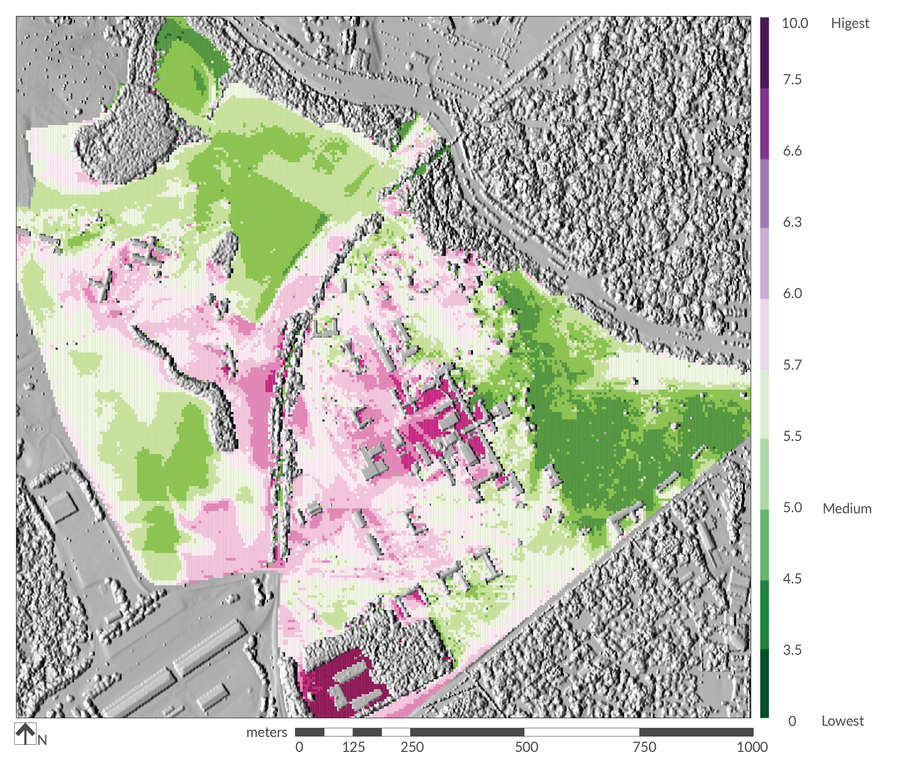
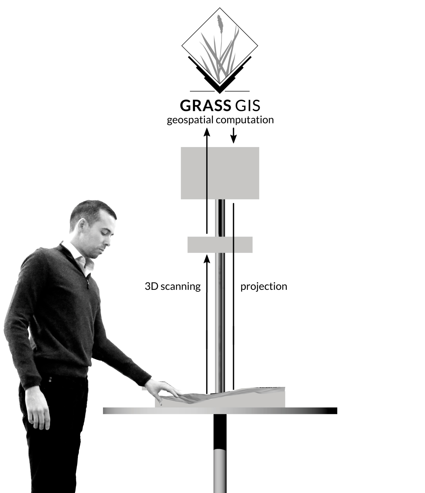
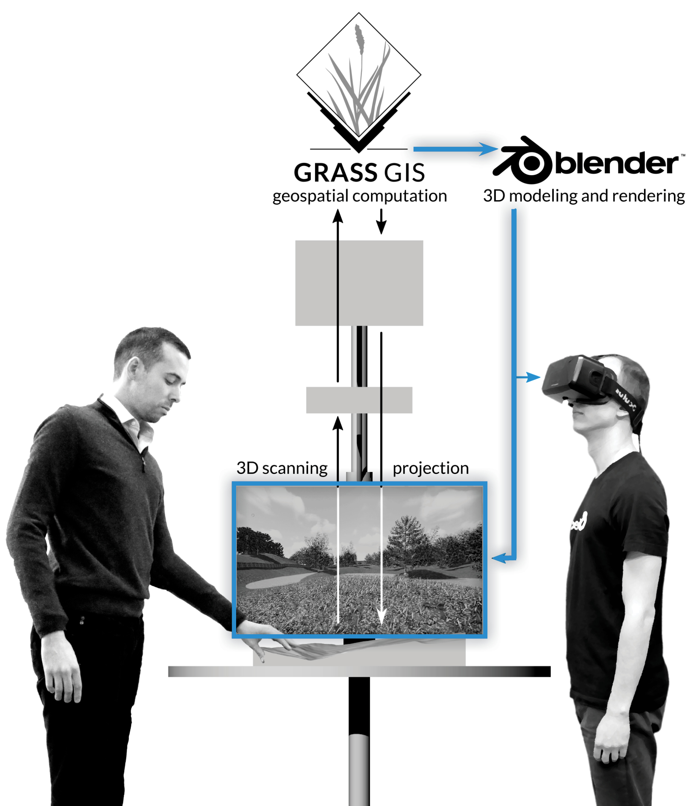

In the course my PhD research I had the unique upportunity to work with Geospatial computation, visualization and user interaction technologies — which made me realized that
these technologies not only as tools but also as modes of operation and inquiry — can radically change the way we study and design of our landscapes.
With geospatial computation technologies, we can develop an accurate model of the earth surface and rapidly simulate the
impact of our interventions on a wide range of environmental factors from flow of
water and pollution to spread of fire and pathogens and to flow of traffic and people.
With virtual reality and specefically immersive virtual environments (IVEs),
we can replicate “real world” experiences of existing landscapes and simulate lifelike scenarios for the imagined landscapes.
Advanced interaction technologies such as Tangible user interfaces, provide intuitive and inclusive access to these
highly specialized design and analysis tools. By doing so they break the knowledge barriers and disciplinary divides between designers,
scientists, and public allowing them to collaboratively design and decide about the future of their landscapes.
Coupling geospatial computation, virtual
reality, and tangible interaction to improve landscape design and research
Payam Tabrizian
October 2018
Perver Baran Design
Ross MeentemeyerGeospatial Analytics
Helena Mitasova Geospatial Analytics
Christopher Mayhorn Cognitive sciences
Andrew FoxDesign
Deni Ruggeri Design
In my PhD research, I develop methodologies that
leverage and integrate these technologies to enhance the research and design of the urban landscape.
Needless to say, this builds on the expertise of my
co-chairs and committee members from Design and Landscape architecture, Geospatial analytics and cognitive sciences.
Acknowledgement
I would like to also aknowledge the amazing help of my colleagues and faculty,
indefinite support of the CGA staff, and ofcourse my family.
Chapter 1: Introduction Modeling experiential qualities of urban landscape with viewscape analysis and IVE
Chapter 2:
Modeling visual characteristic of urban landscape with
viewscape analysis of lidar surfaces and immersive virtual environments
Chapter 3:
Restorative viewscapes: spatial mapping of urban landscape’s restorative
potential using viewscape modeling and photorealistic immersive virtual environments
Realtime 3D modeling and immersion with geospatial data and tangible interaction
Chapter 4:
Realtime modeling, rendering and VR with GIS and tangible interactionChapter 5:
Tangible immersion for ecological design
Chapter 6: Conclusion
I specefically developed two methodologoies.
The first method contributes to landscape assessment and combines geospatial analysis and immersive virtual environments to model
experiential qualities of urban environments. The second method integrates geospatial computation,
automated 3D visualization and Tangible interaction to make design process more intuitive, efficient,
accessible and collaborative. These two methods are described in four chapters and four articles.
Modeling human experience of urban landscape through viewscape analysis of lidar and immersive virtual environments survey
Chapter 2 & Chapter 3
Experience of urban landscape
Landscape experience impact people's decisions for visiting, developing or maintaining landscapes (Gobster et al., 2007; Tveit and Fry, 2006) .
Exposure to landscape's with certain visual attributes can promote mental well-being through psychological restoration (Nordh et al., 2009; Berto, 2005) .
Identifiying experiential qualities of urban enviroments can help making more targetted design and management decisions.
Our experiences of an landscapes (such as sense of beauty, safety, excitemment, serenity and so on) impact our choices of visiting or living in a landscape,
-- They also influence our psyhiological and psychological health.
For example, research shows that spending time in urban green spaces with certain visual attributes our cognticie resources that become deplete after a long working day or being in demanding environments. A process called psychological restoration.
Therefore, identifying and predicting experiential qualities of a landscape can be very helpfull for designers and planners to make
more informed decisions about preserving or altering landscapes.
This can be paticularly important in urban envrionments becasue of all the stressors associated with urban living
and limited availability and access to natural resources.
But the question is how we can measure the experiential qualities of a certain site ?
Landscape experience asessment
Objective
Based on GIS analysis
Efficient
Spatial, ideal for mapping
Spatial map of landscape aesthetic quality
(Vizarri, 2011)
We can take an objective approach and use spatial data such as GIS analysis to compute
landscape structure and pattern and make assumptions about experiential qualities based on
harmony, variation, openness, etc.
This approach is very efficient, and provides actionable data such a metrics
and maps that are valuable for planning and managament purposes.
However, it misses the critical aspect of experience that is the subjectivity and the way we experience landcape on-the-ground.
Landscape experience asessment
Objective
Subjective
Based on GIS analysis
Efficient
Spatial, ideal for mapping
Spatial map of landscape aesthetic quality
(Vizarri, 2011)
Based on perception survey
Reliable
Non-spatial, difficult for mapping
Photo-based perception survey
We can also take a subjective approach and run perceptions survey based on landscape photos, or simulations.
This approach is very powerfull and relible for representing "in-situ" landscape experience and capturing perceptions.
But it is somehow difficult to quantify pictures and draw accurate information about the landscape attributes.
For example its difficult to say how many square meters of area you can see from a location or how far is a specefic buildings or more inricate
analysis such as how harmonius or complex is the viewscape.//
We can also combine these approaches to benefit from advantages of both. That means linking the perceptions derived from subjective analysis
with the landscape structure and pattern derived from objective analysis.
Aims
Develop and evaluate an integrated approach for modeling experiential qualities of urban evironments.
Apply the method to generate a spatial map of perceived (psychological) restoration potential for an urban park.
I aimed to develop an integrated methodology for modeling experiential qualities of urban landscape.
To test how the efficiency of the method, I apply it to model perceived restorative potential an urban park.
Restorative potential is the degree to which we find an environment restorative.
Approach
Light detection and ranging
For modeling urban environments, specially at the scale we percieve and interact with them, we need to make improvements in the precision of our objective analysis.
For that, I used data derived from light detection and ranging technology (or LIDAR) that allows for creating a very detailed surface model of the earth surface and above-surface features like trees and buildings.
This surface is alled DSM.
Approach
Light detection and ranging
Viewscape analysis
Based on the detialed DSM we can then use viewscape analysis to compute landscape structure and
patten from the viewpoint of the human observer on the ground.
Viewscape analysis is a widely used GIS-based method for mapping
the visible area of a 3D surface based on a given vantage point.
Approach
Light detection and ranging
Viewscape analysis
Photorealistic Immersive virtual enviroments (IVEs)
We can then take panoramic photos of the same vantage point and use immersive virtual envrionments or IVEs to turn them into immersive experiences.
Now since both viewscape analyis and IVEs consider the 360 field of view,
they are an ideal match for linking the objective and subjective evaluation of the landscape,
as oppsoed to commonly used images that have limited field of view.
This scheme provides an overview to my developed integrated approach combining viewscape analysis and human perceptions.
In the objective side, I prepare high-resolution surfaces,
then I perform viewscape analysis to compute metrics related to composition and configuration of visible landscape (called viewscape).
On the subjective analysis side, I conduct a survey of photorealstic IVEs based on panoramas that are representative of site's visual charactristics.
I statistically compare the viewscape metrics and perceptions to draw relationhips between landscape structure and patten and human experiences.
These relationships can then be used to estimate experience of other viewpoints and generate a predictive map of experiential quality.
Study area
For the purpose of this study I chose is the historic site Dorothia Dix park which is located here in Raleigh/North Carolina.
I chose this site for many reasons. First, it has a relativiely diverse land cover including natural and landscaping vegetation and historic, residential and administrative buildings.
Also, the site is recently acquired by the city of Raleigh and planned to be the largest city park and a Landmark destination for North Carolina.
That being said, providing spatial evidence of the restorative potential of the park can assist design and planning of the park.
Lidar data
To obtain a high-resolution surface, I used North Carolina QL2 lidar data that has a 3 points per
square meter density and acquired in winter 2015.
Digital surface model (DSM)
Then I interpolated it to develop a 0.5 meters surface model that represents buildings and vegetation.
Tree obstruction error
Viewscape based on bare-ground (DEM)
Viewscape based on DSM
A well known limitation of Lidar derived surfaces if the way that they represent the trees structures which can be big source of error for visbility estimations.
The panoramic image shows a
photograph taken from a vantage point and here
you can see the viewscape map computed on the bare-earth model and on the DSM with trees and buidlings from that vantage point.
You can see that neither condition accurately estimates the visbibility, the bare earth viewscape hugly overestimates the visibility and the DSM with underestimates the visbility becasue
the trees are represented as walls that block the view.
Vegetation structure
A closer inspection vegetation strcuture shown from Lidar points and site photos shows that deciduous specimen are all mostly affected by
this error whereas the mixed vegetation and evergreen trees are predominantly impermeable.
Trunk obstruction modeling
Source: Murguitto et al. 2013
A way to address this issue is to extract the decidous trees from the DSM and replace them with their trunks, a technique called trunk obstruction modeling.
Trunk obstruction modeling
Source:Jasiewicz & Stepinski (2013)
To exatract the trees, I applied a landform detection algorithm called Geomorphons to DSM to detect the treetops. The as treetop are mostly detected as summits shown in dark brown.
Trunk obstruction modeling
This maps shows the extracted treetop.
Trunk obstruction modeling
Assuming that the stems
In the next step, I used a landcover map to replace the deciduous trees with their trunks in the DSM.
The resulting surface model represents a more realistic representation of vegetation with deciduous trees shown as
trunks and the rest of the vegetation left intact.
Trunk obstruction modeling
Now you can see that how trunk obstruction modeling improved the visibility estimations, allowing the line of sight to extend beyonds the decidous trees.
--Now ! A good DSM can give us a good estimation of how much we can see, but we also need a good land cover mop to estimate what we can see.
High resolution land cover
National Landcover Dataset (30 m), 2011
Areal imagery (.5m), 2016
Unfortunately, most of the available landcover, at the time of this study, was so corase that would wash out all the details.
High resolution land cover
To develop a detailed lancover, I combined Lidar vegetation points, with ground cover derived from image classification of multi-band imagery, and buildings derived from vector data.
This resulted in fairly detailed map with .5 m resolution and
classification corresponding to the site’s existing land cover.
Viewscape maps
Binary viewscape
Landcover viewscape
Horizontal viewscape
Vertical viewscape
Based on the spatial data, I generated 4 viewscape maps.
The first one is shows the visibile areas of the surface model from a vantage point, so called binary viewscape.
I intersected this map with landcover to acquire a second map that shows the types of land cover present in a viewscape.
I also intersected the binary viewscape with bare-ground model to create Horizontal viewscape which is what you can see
on the ground and vertical viewscape which is what you can see above the ground.
Based on these maps, I was able to compute the viewscape metrics.
Viewscape computation workflow
This shows the entire workflow for computing viewscape metrics for a single viewscape.
Based on the viewscape maps, several metrics related to compositions and computations of viewscape were computed.
Composition variables indicate the percentage of each landcover present in viewscape such as percentage of mixed forest, buildings, etc.
Configuration metrics include the extent and depth of view, some metrics borrowed from landscape ecology that indicate pattern and shape diversity, and metrics
related to vertical variability such as relief and skyline.
Finally, I developed a python script in GRASS GIS, to automatically compute viewscapes for the entire study area
considering a viewpoints every 5 meters resulting in around 40000 points.
Composition metrics
Areal photo
Herbaceous
0 %
0 %
0 %
65 %
Mixed
12 %
0 %
5 %
12 %
Evergreen
0 %
0 %
4 %
8 %
Deciduous
0 %
18 %
38 %
15 %
Grassland
17 %
38 %
32 %
0 %
Paved roads
48 %
27 %
14 %
0 %
Buildings
25 %
17 %
5 %
0 %
I pulled out the results for four viewpoints to show how the composition metrics charactrize the viewscapes.
You can see the first viewscape is charactrized by dominant presence of Paved roads and buildings.
The second and third viewscapes have a in general a good mixture of landcover types.
The forth viewscapes is mostly charactrized by presense of natural ground cover and mixed forest.
Configuration metrics
Viewscape image
Viewscape map
Extent (m2 )
185,000 1072
50,710
Depth (m)
538
305
1293
SDI (Shannon Diversity index)
1.11
1.49
1.51
MSI (Mean Shape Index)
39.1
19.7
63.48
Nump (Number of Patches)
3700
642
4168
Vdepth (m)
17.3
5.29
29.90
The same was done for configuration metrics.
--As you can see in the Extent charactrize large and small viewscapes shown in the first two maps.
In the third map Shannon diversity index, Mean shape index and Patch number charactrize the high pattern and shape variability of the viewscape.
Viewscape metrics maps
To show how viewscape metrics can spatially vary across the site, I assigned their values to all 40.000 viewpoints.
Here is a look to some of these maps. Each of them can be informative, but for the sake of time I am only describing the first four.
In the extent map you can see how viewscape area varies across the landscape. The most expansive areas are aviable on the western side of the park wheras the
eastern side is has low to medium viewscape areas.
The Shannon Diversity map shows that except the large field to the South West, the rest of the site have highly varied and heterogenous viewscapes.
Finally, from the composition maps we see that the buildings and decidous trees are mostly visibile in the eastern portions of the site.
IVE survey
In the next step, I selected a set of locations with viewscape values corresponding to values of all other viewpoints in the site.
From those, I selected a subsample that was dispersed enough to spatially represent the study area, which resulted in 24 viewpoints.
Example of panoramic photos (Feb 2016)
At each location, I captured a 360 panoramic photo that can be viewed in IVE headsets.
I captured all the images in Winter season to be consistent with the lidar data.
These example panoramas show how the selected viewpoints represent diffrent envrionmetns whithin the site.
IVE survey
Sample: 102 total undergraduate students, park recreation tourism management
Design: Repeated measure (24 randomized trials)
Response measures
Survey item Statement Reference
Restorativeness
I would be able to rest and recover my ability to focus in this environment Lindal & Hartig, 2013
Openness (Visual access)
How well can you see all parts of this setting without having your view blocked or interfered with? Herzog & Kutzli, 2002
Complexity
I perceive this environments as . . . Simple=0, Complex=10
Naturalness
I perceive this environment as … Not natural = 0 , Natural =10 Marselle, Irvine, Lorenzo-Arribas, & Warber, 2015
In the next step, I conducted a lab-based experiment to collect the perception of the IVE scene.
102 Undergraduate students were recruited for the study. For each IVE, they responded to 1 item related to restoration potential, in addition to
perceived openness, perceived naturalness, and perceived complexity. I chose these three commonly tested and more intuitive perceptions to see how viewscape analysis captures the visual charactirstics of the site.
Survey procedure
To briefly describe the experiment procedure, upon arrival, participants were briefed and got familiar with the IVE equipment.
To set the same context for all participants we asked them to imagine themselves walking in the presented environments after
a long and tiring day. Then, each participant experienced a random presentation of the 24 IVEs and rated each of the
scenes on the perception measures using joystick. There was a a 2 minutes recess period in the middle.
Viewscape models
Response variable R2 Significant independent variable
Perceived Openness 0.64 Extent ↑ ***, Depth↑ **, Relief↓ ***, Vdepth var↓ ***, Nump↓ ***, Building↓ ***, Paved↑ ** , Deciduous↑ ** Perceived Complexity 0.42 SDI *** ↑ , Relief **↑ , Depth** ↓ , ED***↑ , Nump***↑ , Building**↑ Perceived Naturalness 0.62 Relief ↑ ***, Deciduous ↑ **, Mixed↑ ***, Herbaceous↑ ***, Building↓ ***, Nump↑ ** Perceived Restoration potential 0.72 Extent ↑ ***, Depth ↓ ***, Relief ↓ ***, SDI↓ ***, Skyline↑ ***, Deciduous ↑ **, Mixed↑ ***, Herbaceous↑ ***, Building↓ ***, Paved↓ **
Generalized linear models for four response variables. Best model fit was determined by step-wise regression. ↑ : Positive association ↓ : Nagative association Variables: Vdepth_var = viewdepth variation, Nump = patch number, ED = edge density, MSI= mean shape index,
SDI= shannon diversity index.
I used multiple linear regression analysis to examine to what extent the viewscape metrics explain the perceptions of the 24 viewpoints.
The results seem promising specially for perceived restorativeness model which predicted 72% of the variations in perceived restorativeness potential.
The findigs also confirmed several relationships between viewscape characteristics and human perceptions.
Perceived openness was in large part explained by the extent and depth, wheras presence of vertical obstructions like buildings decreased openness.
For example, perceived naturalness was mostly explained by presence of natural elements and absence of built elements,
Whereas percepived complexity was explained in large part by landcover heterogeneity and terrain roughness, and shape complexity.
Restoration potential model
Variable coefficient Β coefficient Student t sig Extent 1.90E-05 0.39 11.07 *** Relief -1.20E-01 -0.12 16.17 *** Depth -1.27E-03 -0.34 -6.06 *** Skyline 1.08E-01 0.12 -17.10 *** Vdepth_var 7.18E-02 0.27 6.25 *** SDI -3.82E-01 -0.14 -1.92 ** Building -5.41E-02 -0.37 -5.38 *** Paved -6.14E-03 -0.03 -1.53 * Mixed 1.07E-01 0.66 23.97 *** Deciduous 8.13E-02 0.32 16.47 *** Herbaceous 4.44E-02 0.27 20.30 ***
Generalized linear models perceived restoration potential. Best model fit was determined by step-wise regression.Positive association Negative association
Looking closer at the restoration potential model, Extent showed the highest positive impact indicating that large viewscapes were were perceived as highly restorative. --
Also, presence of lush vegetation such as natural ground cover and mixed forest positively impacted perception of restoration potential.
Intrestingly, presence of decidous trees greatly increased restorativeness likelihood of viewscapes, although they didnt have any foliage in the time of my study. --
I expect that the majestic appearance of the willow oaks and their arrangement have played a part in particpants positive reaction.
The negative influence of vertical variability and pattern complexity is indicative that, controlling for all variables, participants found coherent viewscapes as more restorative.
Perceived restoration potential map

\[Y= 1.90\mathrm{e}{-5}(Extent) -1.20\mathrm{e}{-1}(Relief) -
3.82\mathrm{e}{-1}(SDI) \quad + \quad ... \quad- 1.44\mathrm{e}{-2}(Evergreen) +
4.44\mathrm{e}{-2}(Herbaceous) \]
To achieve the second aim of the study, which was to acquire a spatial model of restoration potential.
I applied the coefficients derived from viewscape model to all the other viewpoints in the study area.
The resulting predictive map indicates for the lack of a better term hotspots for higher restoration likelihood and coldspots which are less
likely to be perceived as restorative.
Restorative hotspots
The Grove
For example, One of the most restorative location in the park, is the space locally refered to as the grove, which is charactrized by abundant presence of willow oaks, grassy areas, and large viewscapes.
Restorative hotspots
The Sunflower field
The other highly restorative area is the large open space covered with natural low vegetation and sorrounded by mixed forests.
This area is also very popular and called sunflower field.
Restorative coldspots
Not surprisingly, the least restorative spaces are those with high concentration of buidlings and parking lots.
Method 1: Conclusion
My developed methodology can be used to model experiential qualities of urban environments.
The spatial maps of perceptions are useful for urban planning and design.
Findings contribute to environmental psychology and design research.
Tree obstruction modeling can improve other landscape visual assessment applications.
The automated viewscape computation script can be used to study larger areas.
To conclude this section, I will point out 5 novel contributions of this work.
First, the intergrated method using LidAR and IVEs proved to be usefull for modeling experiential qualities of urban environments, which can be considered an improvement of
the existing assessment methods that were developed for landscape scale studies and lacked the granaularity and precision to study urban environments.--
Publications
Modeling visual characteristic of urban landscape with
viewscape analysis of lidar surfaces and immersive virtual environments
Computers, Environment and Urban Systems
Restorative viewscapes: spatial mapping of urban landscape’s restorative
potential using viewscape modeling and photorealistic immersive virtual environments
Landscape and Urban Planning
I have developed two manuscripts for this project which are soon to be submitted for review.
The first paper have a methodological approach and targets Computes and urban system journal.
The second manuscript, targeted for landscape and urban planning journal has a more applied perspective and focuses on development of
the spatial model on restoration potential.
Related contributions
Viewscape method
Van Berkel, D., Tabrizian, P. , Dorning, M. A., Smart, L.,
Newcomb, D., Mehaffey, M., … Meentemeyer, R. K., (2018)
Quantifying the visual-sensory landscape qualities that contribute to cultural ecosystem services using social media and LiDAR.
Ecosystem Services , 31, Part C, pp. 326-335.
Van Berkel, D., Tieskens, T., Tabrizian, P. , Van Zanten, B., Smith, J., … M., Neale, A., and Verburg, P.
National assessment of cultural ecosystem services: Leveraging social media to understand America’s most valued landscapes.
Nature Sustainability , in preperation.
IVE survey method
Tabrizian, P. , Baran, P., Smith, W. R. & Meentemeyer, R. K. (2018), Exploring perceived restoration potential of urban green enclosure through
immersive virtual environments , Journal of Environmental Psychology , 55.Baran, P., Tabrizian, P. , Zahi, J., Smith, J. W., Floyd, M. (2018) An exploratory study of perceived
safety in a neighborhood park using immersive virtual environments
, Journal of Urban Forestry and Urban Greening , in press.
Viewscape analysis and IVE survey methods have been seperately used in colloborative researches with my collegues.
Resulting in 4 manuscripts, 3 of which are already published.
Related contributions
Presentation
Tabrizian, P., Baran, P., Mitasova, H., & Meentemeyer, R. K. (2018), Developing viewscape model for urban landscape using LiDAR and Immersive
Virtual Environments ,US Regional Association of the International Association for Landscape Ecology (USIALE) , Chicago, Il,
8-12 April.
Tabrizian, P., Petrasova, A., Petras, V., Mitasova, H. (2017). Using open-source tools and high-resolution geospatial data to estimate landscapes’
visual attributes. International conference for Free and Open Source Software for Geospatial (FOSS4G) , Boston, MA, Aug 14-19.
Tabrizian, P., Baran, P. (2017). Immersive Virtual Environment Technology in Environmental Design Research: Experimental Methods and
Procedures , 48th environment and design research association (EDRA) annual conference , Madison, Wisconsin, May 31- June 6.
Baran, P., Tabrizian, P. (2017). Linking Immersive Virtual Environments to complement human perception research , NCGIS
conference , Raleigh, North Carolina. 23-24 Feb.
Baran, P., Tabrizian, P. (2016). Use of Immersive Virtual Environments in mapping perceived safety in a park , 39th National
Recreation and Park Association (NRPA) Annual Conference , St. Louis, Missouri, October 5–6.
This work has also been presented at several Geospatial and urban planning conferences. Including EDRA, X, Y, Z.
Realtime 3D modeling and immersion with geospatial data and tangible interaction
Chapter 4 & Chapter 5
In the previous project, we discussed how objective analysis and subjective can be integrated
to advance landscape assessment.
The second method aims to integrate these aspects into the design process.
The Science/Design divide
Effective design and decision making require interdiciplinary collaboration and public participation (Wang et al. 2015; Bishop,2011)
Scale and tools are different, specialized and complicated (Foster, 2016)
As we all know, design and planning process today require collaboration between designers, engineers,and scientists to effectively
address environmental aspects such as flow of water, erosion, bio-diversity, pollution along with aesthetic and design considerations.
At the same time design scenarios should integrate public input and communicate tradeoffs in a way they can understand and participate.
But designers and scientisct tools and materials are very different.
Designers use tools such as CAD and 3D renderings to draft the plans and visualize the landscape experience
in a way that clients and stakeholders can understand.
Scientists, on the other hand, mostly work with Spatial and statistical analysis software and communicate their results with maps and indicators.
As these software and tools become more and more specialized, integration of scientific
inquiry into iterative design process becomes more and more difficult.
These analytical divides slows down the design process, and makes collaboration and public participation difficult.
Aims
Develop an easy-to-use collaborative design tool that enables simultaneous
assessment of experiential and spatial analysis in the iterative design process
Test the methods's functionality using a landscape design case-study
To address these limitations, I sought to develop a method that
enables more intuitive interaction with design phenomenon and
simultaneous spatial and experiential analysis in each iteration of design.
I also aimed to test the method's functionality in a landscape design case-study.
While this methods is applicable to other design applications,
I chose landscape design study becasue it involves a good deal of ecological and aesthetic trade-offs.
Approach
My developed approach combines geospatial computation, tangible interaction and 3D visulization.
Thanks to Tangible landscape system, Realtime linkage between Tangible interaction
and geospatial analysis has been already enabled. My developed addition links
geospatial analysis with 3D modeling and rendering so that design scenarios can be
rendered into perspective views and immersive scenes, in real time.
Tangible Landscape
Embodied and intuitive interaction, rapid sketching and geospatial feedback
Realtime streaming of GIS data
Robust open-source computation backend (GRASS GIS)
Source: Petrasova el al.Tangible Modeling with Open Source GIS , Springer, NY.
A quick intro to Tangible landscape, is a technology for tangible interaction with GIS developed here at the center
for Geospatial analytics by Anna Petrasova and colleagues in Dr. Mitasova's lab. It allows user to manipulate a physcial model of the landscape with hand or tangible objects,
and in near real time and recieve relevant geospatial feedback.
The system uses the open-source GRASS GIS software that allows for
implementing a wide range of geospatial simulations such aa variety of spatial analysis such as water flow, biodiversity, fire spread, pathogen spread, etc..
Hardware setup

To implement this concept, I made additions to Tangible Landscape's hardware and software.
Here you can see you the existing tangible landscape setup.
Hardware setup

I added a 3D modeling and game engine software,
called blender with outputs to a computer display and an
immersive virtual reality headset.
Blender is a free and open source program for modeling, rendering, simulation, animation, and game design.
Blender was perfectly suited to this application because it is has an internal python scripting environment for automating
3D modeling procedures and more importantly, it has addons for importing GIS data. It also has a very efficient and realistic real time rendering
capabilities with output for head mounted displays.
Software architecture
On the software side, I developed an addon for Blender that is linked with Tangible landscape addon in GRASS GIS.
GRASS GIS and Blender are loosely coupled through file-based communication. As user interacts with the tangible model or objects,
GRASS GIS sends a copy of the geospatial data to a specified system directory.
A monitoring module in blender scripting environment that constantly watches the directory,
identifies the type of incoming information, and applies procedural 3D modeling to update the 3d scene.
Feature Import Model Shading
Terrain raster
Water raster
Patches polygons
Trail polyline
The implemented procedural 3D modeling follows three general steps of importing the GIS features,
turning them into 3D models and and apply materials and textures (a procees called shading).--
--Different geospatial formats are supported. --Rasters can be used to communicate surfaces and terrains, polylines can be used for linear features such as waypoints
and polygons can be used to delineate zone type objects such as patches of trees and urban blocks.--
Once imported specific modeling and rendering procedures are applied for each environmental features.
For example terrain requires addition of side fringes and surface material whereas tree patches related should get populated with trees.
Landform and water
Here I show you some examples of how the development can support diffrent design activities.
For example, users can change the landform using their hands and sculpting knife to see the projection of water flow and accumulation simulations.
You can see on the left side of the model we project numeric feedback about the depth and surface area of the retained water.
In this case both terrain and water data are sent to Blender to update the 3D model.
Vegetation
For vegetation design users can use pieces of colored felt. Each color represents a landscape class, like deciduous, evergreen etc.
--As user places the felt, the RGB image of the camera is classified in GRASS GIS to compute analysis related landscape heterogeneity,
and biodiversity. We also project an estimated degree of pollution remediation as a result of planting phyto remediating vegetation.
On the 3D side, blender populates corresponding plants in each patch based on a predefined spacing and density.
Paths
We can use wooden cubes as waypoint to design linear features like a trail or a road.
As user inserts each of the waypoints, Grass GIS recalculates and projects an optimal route with minimized slope.
A profile of the road and the slope of the segments are projected as feedback (show them).
For 3D visulization, the line is extruded with a pre-defined profile and material in this case a baord walk.
Cameras
Any time during the interaction users can pick a mouse and freely navigate the 3D scene environment and explore diffrent vantage points.
But I wanted to keep that feature Tangible as well.
We used a wooden marker with colored tip that is linked to the camera in the 3D scene.
The center of the defines the location of the camera and the colored tip defines the direction of the view.
Immersion
Using a virtual reality addon, blender viewport is continuously displayed in both viewport and headmounted display,
so users can pick up the headset and get immersed in their prefered views.
Realism
Low-poly rendering
High-poly style rendering
We implemented a feature allowing designers to switch between different rendering modes anytime during the design process. This allows them to
use more abstract representation in the site planning and zoning phases, and use more realistic renderings in later phases.
The low-poly cartoonish rendering can be also usefull for engaging the younger age groups in the design process.
Realism
cycles render engine, 5 minutes, 2 million pixels Realistic rendering
For end-products, printing and presentation purposes,
the scenes can be rendered with much higher quality which ofcourse depending on the details can take from one to several minutes.
Case-study
Geospatial Scientist
Landscape Architect
Spring Hill house site (48000 m2
To test the functionality the prototype in the design process, we conducted several pilot user studies.
Here I am showing a design case-study performed collaboratively
by a geospatial scientist and a landscape architect to plan a small recreational site in Raleigh.
They were tasked to design the topography, vegetation arrangement, water-regime, a small shelter and a recreatioal trail.
Changing landform and hydrology
In the first step, they changed the landform to create a pond, and direct the road runoff to the pond. They used the excavation soil to create artificial mounds to
buffer the site adjacent roads, and create invitings entrance to and out of the site.
Exploring views from the park site entrances
Here you can see how they used the view markers to check the entrance profiles from and to the access roads.
Planting trees and siting the shelter
Then they planted four different plant species while exploring the biodiversity measures.
To site the shelter, they used a wooden marker to explore a suitable location that has best views to the pond and is backed by the forested area.
Designing the trail and exploring views
In the last step, they designed a scenic trail to connect the shelter to the parking lot,
the trade-off in this case was to minimize the trail slope while providing interesting viewscapes.
Evaluation of design scenarios
They repeated the design process with another strategy. Each scenario took around 10 minutes and designers explored multiple solutions in each design step.
You can see that how these scenarios can be compared against each other to support more informed decisions.
Spatial analysis such as landscape metrics, Site hydrology maps,
amount of runoff saved can be collaboratively balanced to create a landscape that works and is appealing.
Method 2: Conclusion
Developed technology can potentially improve landscape design and planning.
User studies (e.g., designers cognition, participation, collaboration).
Framework for real-time 3D rendering with geospatial data can improve other modeling and simulation applications.
I conclude by mentioning a few novel contributions of this work and its implications on design.
First, our exploratory results indicate that the developed technology can potentially improve landscape design and planning by supporting
collobration and parallell exploration the tradeoff between environmental and aesthetic factors. It also can make design process more efficient by enabling rapid sketching, instant 3D rendering, and geospatial output.
--To empiricaly test these claims, we are intending to conduct user studies to compare the technology with typical design tools to assess whether and
how interaction with system and its components impact the design process as well as interdiciplinary collaboration, and participation.
-- Second, my framework for realtime rendering with GIS can be used with or without the tangible landscape -- as a standalone desktop or web application-- can enhance
other geospatial simulation applications, such as landuse change models, landscape evolution, firespread, storm surge and so on.
Related publications
Tabrizian, P. ,
Harmon, B.,
Petrasova, A.,
Vaclav, P.,
Mitasova, H., &
Meentemeyer, R.K. (2017).
Tangible immersion for ecological design ,
Proceedings of the 37th Annual Conference of the Association
for Computer Aided Design in Architecture (ACADIA) , Cambridge, MA. pp. 600-609.
Tabrizian, P.
Realtime 3D modeling, VR and immersion , In :
Petrasova, A, Harmon, B., Petras, V, Tabrizian, P, Mitasova, H. Tangible Modeling with Open Source GIS , Springer, NY.
Tabrizian, P.
Landscape design , In :
Petrasova, A, Harmon, B., Petras, V, Tabrizian, P, Mitasova, H. Tangible Modeling with Open Source GIS , Springer, NY.
Tabrizian, P.
Petrasova, A.,
Harmon, B.,
Vaclav, P.,
Mitasova, H.,
& Meentemeyer,R. K. (2016).
Immersive Tangible Geospatial Modeling , Proceedings
of 24th ACM SIGSPATIAL, International Conference on Advances in Geographic Information Systems (ACM SIGSPATIAL) , 2-6 Nov, Burlingame, CA.Software
Realtime 3D rendering and immersion with Tangible Landscape.
Tangible Landscape Blender plugin.
This work has been published in three peer reviewed proceedings and two book chapters in Tangible Landscape book's second edition.
Also, the software is usable as a Blender plugin is open-source and publicly available.
It is currenlty being used in tandem with Tangible landscape in several research and academic instituions
including University of Georgia and University of Illions.
Related presentations
3D Visualization of Landscape Change Scenarios with Real-time Tangible Interaction.
US Regional Association of the International Association for Landscape Ecology (USIALE), Chicago, Il, April 8-12
2018
Tangible immersion for ecological design.
37th Annual Conference of the Association for Computer Aided Design in Architecture (ACADIA), Cambridge, MA , 2-4 November 2017
Coupling a geospatial Tangible User Interfaces (TUI) and an Immersive Virtual Environment
(IVE) using using open-source geospatial and 3D modelling tools.
International conference for Free and Open Source Software for Geospatial, Boston, MA, Aug 14-19
April.
Tangible Landscape + VR: Moving along Reality-Virtuality gradient to deal with geospatial complexity.
28th International cartographic conference (ICC), Washington D.C, July 2-7, 2017
Immersive Tangible Landscape modelling: a step towards the future for integrative
ecological planning.
48th environment and design research association (EDRA) annual conference, Madison, Wisconsin, May 31-
June 6. 2017
Immersive Tangible Modeling with Geospatial data.
International Conference on Advances in Geographic Information Systems (ACM SIGSPATIAL), San fransisco, CA, Oct 31-Nov 3, 2016
Related workshops
Real-time 3D modeling with Geospatial data Harvard University Center for Geospatial Analysis (CGA), Cambridge, US, Aug 2017
2018
3D Visualization of Geospatial Data With Blender and Sketchfab.
28th International cartographic conference (ICC), Washington D.C, July 2-7, 2017
Summary of contributions
Method for modeling and mapping experiential qualities of urban environments
Method for improving tree obstruction in DSM
Software for automated viewscape analysis and IVE survey
Method and software for real-time 3D rendering and immersion with geospatial data, and tangible interaction.
ptabriz.github.io/final_dissertation_presentation/
Across both methods there are the most notable contributions I made.
I Developed a novel method for modeling the experience of urban landscapes.
This method led to development of two software which can be potentially usefull for other researchers.
-- The framework for realtime rendering and VR with geospsatial data is also Novel and has not been developed before as a software.
Also, this is the first effort that tried to use realistic 3D rendering in conjuction with Tangible user interfaces.


 Dorothea Dix park, Raleigh, NC, 308 acres
Dorothea Dix park, Raleigh, NC, 308 acres  Airborne lidar (North Carolina QL2), Acquired Jan 11, 2015 (leaf-off)
Airborne lidar (North Carolina QL2), Acquired Jan 11, 2015 (leaf-off)
 0.5m resolution DSM
0.5m resolution DSM
 Panoramic image taken from the viewpoint
Panoramic image taken from the viewpoint 


 Evergreen
Evergreen Evergreen + dense understory
Evergreen + dense understory Deciduous stands
Deciduous stands


 Viewscape before obstruction modeling
Viewscape before obstruction modeling  Viewscape after obstruction modeling
Viewscape after obstruction modeling  Trees derived from lidar points
Trees derived from lidar points Ground cover derived from supervised classification
Ground cover derived from supervised classification  Roads and buildings derived from official vector data
Roads and buildings derived from official vector data


 Tangible interaction
Tangible interaction Projected simulation output
Projected simulation output